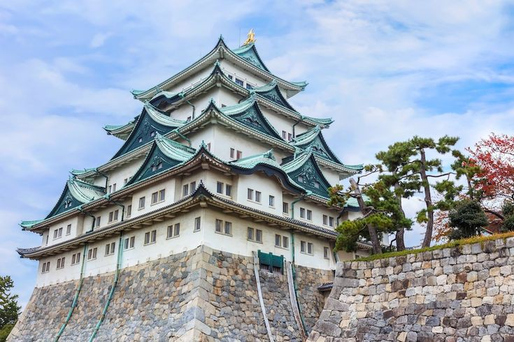
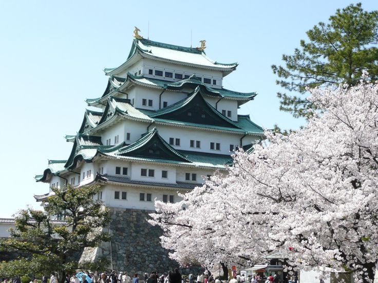
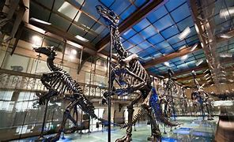
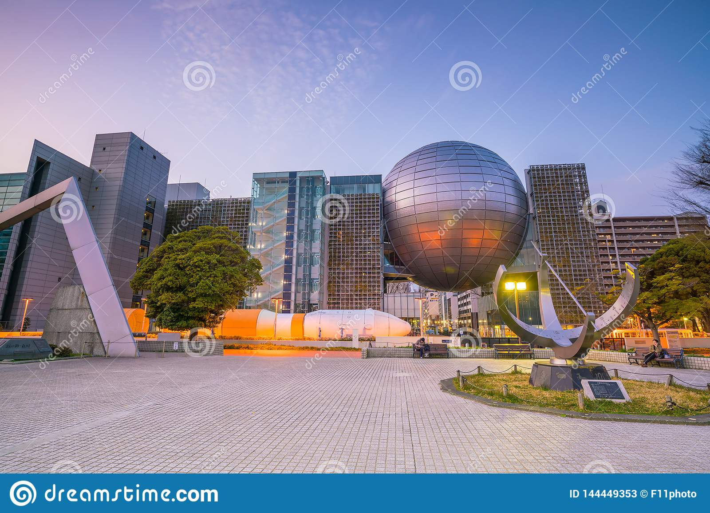
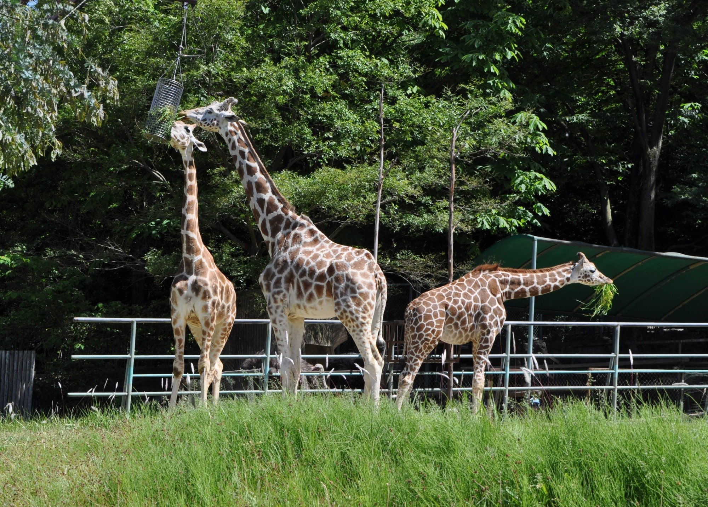
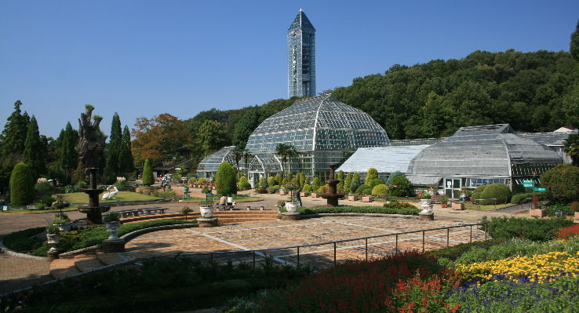
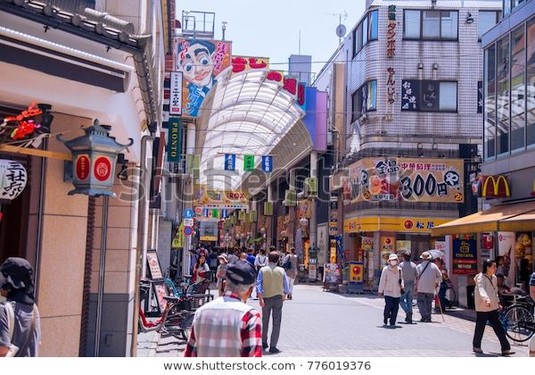
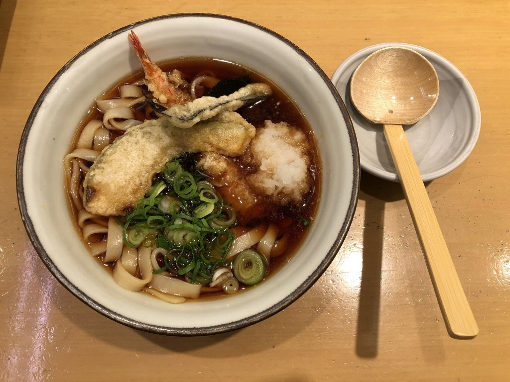

NAGOYA
Célèbre pour son château, la ville de Nagoya est à bien des égards, le symbole du dynamisme au Japon. Berceau de l'histoire, métropole industrielle du pays, Nagoya plait pour son caractère intemporel malgré une quadi disparition dans les années 40. A la fois témoin du passé et acteur du futur, son patrimoine a ce quelque chose d'original qui ne laisse personne indifférent !
Le château de Nagoya
Visiter le château de Nagoya est un des must-do d’un séjour à Nagoya. Cet édifice construit au XVIIe siècle, durant la période d’Edo, est un des plus beaux du Japon. Il n’a pas été épargné par les ravages de la Seconde Guerre mondiale.Toutefois, les multiples rénovations dont il a été l’objet lui ont redonné sa splendeur d’antan.

Le musée des sciences

Vous ne savez que faire à Nagoya avec des enfants. Nous avons la réponse ! Construit sur sept étages, vous ne saurez plus où donner de la tête, tant le nombre et la qualité des expositions et des expériences sont hors du commun. Très ludique et pédagogique, le musée des sciences de Nagoya est impressionnant, avant même d’y être entré. Il est notamment réputé pour son planétarium qui n’est rien moins que le plus grand au monde !
Le zoo et le jardin botanique
Situé au nord-est de Nagoya, le zoo d’Higashiyama abrite de nombreuses espèces animales, dont des koalas et des éléphants. Pour les plus jeunes, il est possible de caresser de petits animaux. Au cœur du jardin botanique, la plus vieille serre du Japon abrite plus de sept mille espèces de plantes, si subtilement agencées que l’on croirait parfois se promener en pleine nature.

Aquarium du port de Nagoya
.jpg)
Ville industrielle, Nagoya a tenté de se donner une image plus séduisante en transformant son port. Pari réussi ! Envolez-vous sur la grande roue, promenez-vous le long du Garden Pier ou évadez-vous en mer le temps d’une visite de l’aquarium. Celui-ci ravira les plus petits, mais aussi les plus grands ! Si les dauphins et les bélugas offrent un beau balai, les pensionnaires les plus impressionnants sont les orques.
Sotenghai du quartier d'Osu
Non loin du temple Osu Kannon, vous ne pouvez manquer la shotengai (galerie commerçante) du quartier d’Osu. Vous trouverez forcément votre bonheur dans l’une des boutiques de cette allée qui s’étend sur près de deux kilomètres. Des bars en passant par des restaurants ou des magasins d’antiquités,vous ne pourrez résister à la tentation !

Combat de Sumo

Et sur le plan sportif, que faire à Nagoya ? Si vous avez la chance de visiter Nagoya en juillet, ne manquez pas l’opportunité qui s’offre à vous d’assister à un combat de sumo. Pour voir ces imposants lutteurs en action, les places sont difficiles à obtenir. Alors veillez à bien vous organiser. Ce serait dommage de rater cet incroyable spectacle, typiquement japonais !
Tempura
Vous avez faim ? Cela tombe bien ! Venez déguster l’une des spécialités locales de Nagoya ou de l’archipel nippon.Connues de tous, les tempuras sont un plat de friture japonaise… originaire du Portugal ! En effet, elles sont la ré-adaptation des peixinhos da horta, introduites sur le territoire japonais.
